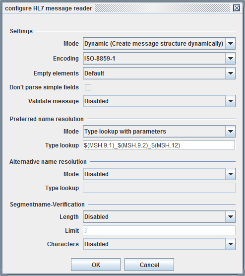

HL7 message reader

Topic content
Description
The HL7 message reader parses HL7 formatted messages and creates a structured Message from it.
Creation
A HL7 message reader is created, like all other deserializers, by selecting it in the according Stream channel.
Configuration
The user can configure the HL7 message reader using the following dialog.

Step by Step
The user may select the Encoding to be expected when the input stream is converted to HL7 text characters.
Then you have to select the of processing.
• The HL7 data must conform to a particular HL7 Message type. If not (e.g. there are additional fields contained in the HL7 document) the HL7 message reader causes an error. The message type to use is configured in the fields for name resolution.
• No message type is used to parse the HL7 data. The structure of the message is created dynamically. E.g. Each segment name in the HL7 data causes the creation of an element with this name. All field names then are created using generic names like <segmentname>.1, <segmentname>.2 and so on. E.g. a Segment PID will have fields named PID.1, PID.2 and so on. Similarly the components of a field are named like CO.1, CO.2 and so on. And finally sub components are named according to the pattern SC.1, SC.2...
• Works basically like the Type mode but allows a field to have additional components or a component to have additional sub components. These additional elements are named in the generic fashion described for mode.
Empty elements
By default the HL7 message reader doesn't create elements if the field or the component in HL7 data is empty. If you select the option Create empty elements empty elements for empty fields are created.
Don't parse simple fields
This option is selectable only in mode . In standard mode an error is thrown if according to the message type a field must not contain any components but the field data contain component separators and therefore actually has components. In real world applications quite often applications behave wrongly writing a component separator ( ^ ) or a sub component separator ( & ) without escaping it. To cope with this applications the HL7 message reader allows to set the option Don't parse simple fields. If this option is checked simple fields or simple components are not checked to contain delimiters. A field is considered simple if it has no component according to the message type and a component is considered simple if it has no sub components according to the message type.
Validate message
This option is selectable only in mode . If you enable this option the cardinality of the message fields are checked while creating the message. So for example if a required segment is missing and this option is enabled the HL7 message reader causes an error.
Name resolution
In the modes and a message type is necessary to parse the HL7 data. The procedure to find an appropriate message type is called Name resolution. There are three strategies to find the correct Message type:
•
This strategy uses a name pattern given in the field Type lookup. Using this pattern a name is created from some data fields and a message type having this name is searched. E.g. the standard pattern $(MSH.9.1)_$(MSH.9.2)_$(MSH.12) creates a message name like ORM_O01_2.3 if the MSH segment of the HL7 data looks like MSH|^~\&|iMed|GKH|CWD|GKH|20120723114612||ORM^O01|2013612|P|2.3|||AL|NE|DE
•
This strategy is almost the same than the lookup strategy but the names of the message types are compared without considering character case. So The type name orm_o01_2.3 is found even it the Message contains the values ORM^O01 and 23.
•
In this case you must put the full class name of a java class into the input field. This class must implement the interface emds.epi.impl.adapter.stream.segpars.MessageTypeResolver.
This interface is defined like:
public interface MessageTypeResolver {
/**
* Find message type name that should be used for syntax checking of messages.
*
* @param scenarioIdentifier Reference to owning process scenario
* @param availableMessageTypes A set of currently available message types. The returned name is only valid if it is contained in this set
* @param messageProperties A pair of attributes key/values that have been pre-parsed and should be used for generating the message type
*
* @return A ordered list of message type names that can be
*/
public String resolveMessageTypeName( String scenarioIdentifier, Set<String> availableMessageTypes, Map<String,String> messageProperties ) throws EpiBaseException;
}
Segment name verification
In HL7 normally all segments are denoted by a three character segment name like MSH, PID or PV1.
To check for valid HL7 message data the HL7 message reader can be configured to check the length of segment names. If the option is enabled and a segment name is longer then the given length (normally 3), an error is thrown. Additionally you may check for correct segment names by selecting the option .